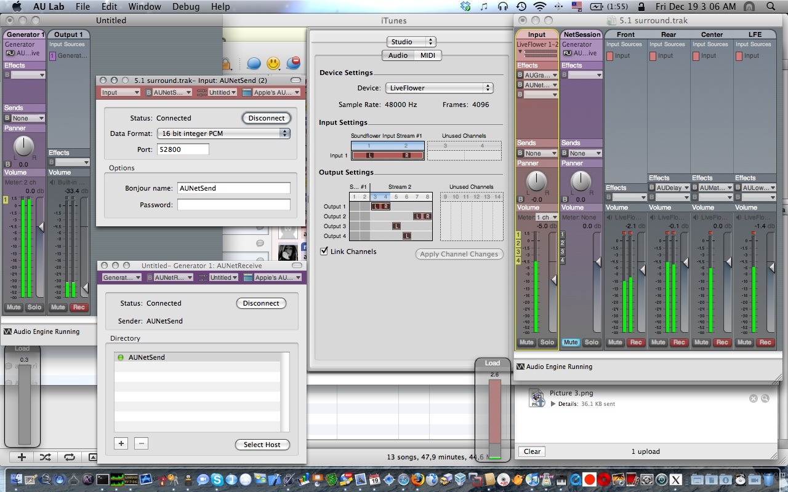

Implementing an image gallery using facebox and will_paginate
On VisitaCSA we’re using defunkt’s facebox to show places images at large. Facebox is a great general-purpose lightbox, because it is fast, stable, is based on jQuery and has got a really clean API.
But we needed more than a simple display lightbox, because we wanted our users to navigate easily between all images, possibly without modifying facebox at all. The solution turned out to be pretty simple, thanks also to the will_paginate plugin we were already using. It all burns out to have:
- A Photo model, instrumented with the
has_attachmentmethod - Resource routes for photos (
map.resources :photos, :only => :showinconfig/routes.rb) - A
showcontroller method in thePhotosControllerthat calls.paginatewith a:per_pageargument of 1 - An HTML view for the photo resource, that has pagination controls using the
will_paginatehelper - Some jQuery code hooks onto the pagination links and make the browser load via AJAX the next photo directly into the facebox.
The obfuscated blinking border
This is the obfuscated piece of Javascript code that implements the red border and loads Google Analytics on the Segmentation Fault site :
77 <script type="text/javascript">// <![CDATA[
78 var theLoadSequenceToRunAfterTheDocumentHasBeenLoaded = function() {
79
80 // The blinking border
81 //
82 (function(t){// (C) 2009 vjt <segmentation-fault@core-dumped.info>
83 var $=function(_){return(document.getElementById(_));};var ee =[
84 $('n'),$('s'),$('w'),$('e')],e,_=true;setInterval(function(){for
85 (var i=ee.length;i&&(e=ee[--i]) ;_) {e.className=e.className?'':
86 'b';}},t*08); /* .oOo.oOo.oOo. ^^^^^ -*** * *** *** *******- **/
87 })((4 + 8 + 15 + 16 + 23 + 42) * Math.PI / Math.E + 42/*166.81*/);
88
89 // Google analytics
90 //
91 try{var pt=_gat._getTracker("UA-1123581-3"); pt._trackPageview();}
92 catch($aMarvellousErrorThatWontBeDisplayedOnTheUserBrowserAtAll){}
93
94 }// end of theLoadSequenceToRunAfterTheDocumentHasBeenLoaded routine
95 //]]></script>
To me, it looks like a contrived melody, or complicated poetry. It’s evil engineering, I know. But when I was writing it, I felt exactly the same I did while writing verses with rhymes. _why’s words are absolutely pertinent here: “until programmers stop acting like obfuscation is morally hazardous, they’re not artists, just kids who don’t want their food to touch.”.
You can view the code with syntax hilighting on github, or with the “View source” function of your browser while you’re on the segfault site. :)
How to mirror a static copy of the opensource.org website
I currently maintain the italian mirror of the Open Source Initiative web site, and today I realized that the script I wrote some months ago wasn’t doing its job well.. because the CSS files weren’t downloaded at all, causing a rather unpleasant rendering of the site.
To mirror opensource org I’m currently using the plain’ol GNU Wget -r—mirror and so on. While the good’ol wget downloads each page prerequisite defined in the HTML source, it doesn’t support @import CSS rules, and doesn’t download images referenced in CSS with url() rules.
BTW, nothing that can’t be resolved with some regex-fu: that’s why I’m sharing the script I’m currently using to mirror the opensource.org web site, hoping it will generate either a new mirror or some insights on how to do this job better :).
The script: update_opensource_mirror.sh
Enjoy! :)
Continuous evolution
releases$ du -sch *
7.6M 20081209132347
7.0M 20081209133350
7.6M 20081209144343
7.1M 20081209145133
7.1M 20081209151843
7.1M 20081209163013
7.1M 20081209175506
7.1M 20081209183553
7.1M 20081211122939
8.6M 20081212190026
8.3M 20081212201852
8.3M 20081212203943
8.3M 20081212205430
8.3M 20081213014847
8.3M 20081213020357
8.4M 20081213163428
8.4M 20081213173633
A permalink_fu improvement: allow modification of permalinks and send HTTP redirects on-the-fly
Another spin-off from the www.visitacsa.it website: a permalink_fu improvement that allows dynamic permalinks. I know it is an oximoron, because permalinks should be .. well .. permanent! And because search engines index them, they should never change. But what happens when you publish something, your permalink is generated with permalink_fu using the title of your post, and after a couple of days you want to change the title, and the permalink under which the post is accessible as well?
Following the specification, your app should send out a 301 moved permanently HTTP status when accessing the old permalink and redirect the client to the new Uniform Resource Locator. That’s quite the same thing what my modification to permalink_fu does: whenever your post attributes are changed, the former and new permalinks are saved to the database, and you can enable your controller to generate 302 moved temporarily redirects when needed. In other words, it checks whether the requested URL is an old permalink, and automagically redirects the client to the new one.
The jQuery ajax-upload-fu plugin
I recently wrote jQuery plug-in, that allows AJAX file uploads without using a fixed file input button. It achieves its goals by installing an OnMouseMove handler over the selected elements, and moving the input button under the mouse cursor.
The quote that inspired this code is: “If Muhammad won’t go to the the mountain, the mountain will come to Muhammad”,the opposite of the more known proverb :).
It has been spinned off from the Visita CSA application JavaScript codebase, see the gist for more information, and have a look onto the live app code for an example of its usage.
Here is the source code:
The Windows 7 default wallpaper meaning.
When you install the developer beta of Windows 7, after the usual 3 reboots cycle, you are greeted with the following image:

It is the Siamese fighting fish, a beautiful tropical fish, but with an interesting characteristic: it is extremely aggressive. It is popular belief that two males fight themselves even in the wild, but that’s not quite true. This belief descends from the behaviour of the fish into an aquarium, where the victor continuously attacking the loser, eventually causing the loser’s death.
Now, think about the software ecosystem as an aquarium. And think about microsoft into this aquarium. The latest release of Microsoft OS has an aggressive fish as its default skin, and it is alone in this aquarium. And there’s no place for anyone else: they’ll fight whoever adversary, even if it’s from the same species.
What’s uncertain is .. they’ll succeed, or not? :). We’ll see!
Playing with Audio Units via AU Lab to gain 5.1 surround

The right session shows a document open on an aggregate audio device between soundflower (2ch) and a Creative SBLive with 6 channels: the flower receives sound input from iTunes and routes it to the card channels, using all the 6 speakers.
The end of online anonymity
Exactly the words that run around my mind these days:
http://www.readwriteweb.com/archives/the_end_of_online_anonymity.php
“When we reach the point where online anonymity has ended, instead of getting to be who we really are, the fact that we’ve become so aware of the fact that we’re always being recorded, photographed, tracked, and traced, will have actually created a slightly altered personality instead. Like reality TV show contestants, the act of being observed will change our behavior. Our personal brand image will become our public identity and therefore our identity.”
I’d think these describe exactly the “facebook effect”.
What do you think?
Making the CCacheServer Kerberos Ticket server actually Work(tm) on OSX
If you’re wondering why the CCacheServer daemon, that caches in memory Kerberos tickets obtained via kinit(1) is NOT starting .. that’s because of a strange bug regarding the LimitLoadToSessionType specified into the agent .plist, located into
/System/Library/LaunchAgents/edu.mit.kerberos.CCacheServer.plist
on OSX 10.5 systems.
You simply have to comment out these two lines:
Pushing git commit messages to lighthouse in a batch
If you use github-provided lighthouse integration, from the “Admin” pages of your git repository, you may have stumbled upon on a glitch: every changeset on lighthouse appears as done by the lighthouse user that configured the integration on github.
This happens because lighthouse uses the API token to link changeset authors to LH users, and that’s not good when you’re not alone committing :-).
A simple solution is to use a post-commit hook, as described here, but that’s not satisfactory because it means that every time you issue git commit on your console, the commit message will go public, and if you --amend or reset --soft the index you’ll have to browse to lighthouse and delete the changeset.
A much smarter solution is to push all changed revs when pushing them to github: I modified the original post-commit hook and installed it alongside the git command in $(dirname `which git`)/<b>git-lh</b>.
The mayonnaise jar and two glasses of wine
English version below.
“Quando ti sembra di avere troppe cose da gestire nella vita, quando 24 ore in un giorno non sono abbastanza, ricordati del vaso della Maionese e dei due bicchieri di vino…”
Un professore stava davanti alla sua classe di filosofia e aveva davanti alcuni oggetti.
Quando la classe incominciò a zittirsi, prese un grande barattolo di maionese vuoto e lo iniziò a riempire di palline da golf. Chiese poi agli studenti se il barattolo fosse pieno e costoro risposero che lo fosse.
Il professore allora prese un barattolo di ghiaia e la rovesciò nel barattolo di maionese. Lo scosse leggermente e i sassolini si posizionarono negli spazi vuoti, tra le palline da golf. Chiese di nuovo agli studenti se il barattolo fosse pieno e questi concordarono che lo fosse.
Il professore prese allora una scatola di sabbia e la rovesciò, aggiungendola nel barattolo; ovviamente la sabbia si sparse ovunque all’interno. Chiese ancora una voltase il barattolo fosse pieno e gli studenti risposero con un unanime “Sì!”.